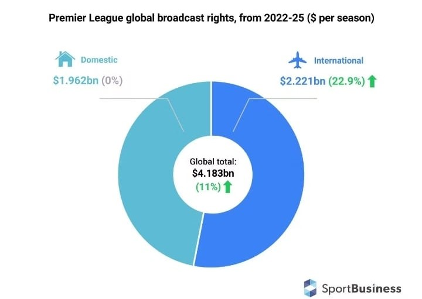

Premier League global broadcast rights
The rich Man’s game in the Global North Vs The Poor man’s game in the Global South.
Why are European Football Leagues Followed by Africans more than how Africans follow their own leagues.. ?
Recently Azam TV signed a contract with our club AFC Leopards SC,
the broadcaster is looking at ensuring Kenyans watch some of their local football matches.
On the same breath they have contracted AFC Leopards SC to market and sell their decoders to their large fan base across the country.
As a Branch of AFC Leopards SC supporters here in Kenya,
we welcome the move and take up the responsibility of marketing these decoders in order to ensure the penetration of our
local game to as many Kenyans as possible.
Football is the most loved game in the world. While in Europe players and those involved in football swim in million dollars,
the story in Africa is sorry and disheartening if not heart breaking.
The African Leagues are mostly disorganized, dismally resourced and those involved seldom make a living out of their football trade.
In Africa, some players do not even afford transport to their training grounds. Some are forced to walk for Kilometers to reach
their training areas which are always dusty or muddy grounds some even dotted with rocks.
These players can’t afford to live in decent neighborhoods forcing most of them to live in slums where the conditions are
deplorable with amenities such as sanitation and water being luxuries.
These players go through the most unpredictable lives with uncertainties of tomorrow being their daily worries.
Players in Africa live on hope that one day they will board a plane to Europe to secure a better life.
Despite all these challenges that render football in Africa a poor Man’s game, across Africa, people follow the
European leagues religiously. Both in the cities and rural Africa, Football fanatics throng clubs and restaurants
as well as video halls to watch their favorite teams, supporting "their" teams to near cultic levels.
Every weekend is an English Premier League Weekend in Africa, thanks to EPL top teams fanatic following in Africa.
The EPL broadcasting rights across Sub-Saharan Africa doesn’t come cheap. In the current contract between EPL and the subsidiary
of Multichoice, SuperSport which is the largest sports broadcaster in the Sub-Saharan Africa costs Africans
close to USD$ 300 million a season.
Logically, if Africa were watching their local leagues then the African leagues would be million dollar leagues thus alleviating
the squalor status that is the African Football.
It is thus awkward to dissect why European football is viewed more than African football without delving into these hegemonic and
deeply structural factors. It is not that African football is inferior in any way. Because if that is the case
(that African football is devoid of quality and exceptional talent) then what explains the enviable success of African footballers
when they cross oceans to play in Europe?
As much as the African players are paid well in the European Leagues, they are subjected to very high taxes, besides them spending much
of their earnings in the countries they play, very little trickles back to Africa as Foreign direct remittances.
Case in point, the three year seasons 2022 to 2025, Sub-Saharan Africa has secured broadcasting rights worth USD$ 693 million.
This means on average each of the 50 countries shall spend close to KES 1 billion per season in paying for broadcast rights of the
European Football so that the "poor" Africans can entertain themselves lives and direct from Europe
(You must be very rich to import Entertainment).
An amount that if each country was to spend on their local league, the football situation can be different within less than three seasons.
It is thus an axiomatic that the low perceptions of African football by Africans themselves is inextricable from socio-political and
economic reasons. Global inequalities and the ineptitude of African leaders and administrators mean that there is perennially low
investments and betterment being channeled towards improving the status of African football.
Poor, derelict infrastructure remains the bane of the African football. Add to that the abysmal state of talent development creates a
regrettably sad situation. Because of such investment paucity, European football leagues are always an alluring material reality for
African footballers.
One goes to a place where they know they will achieve their dreams, the dream of any African Footballer is to reach the "Promised"
land — playing in the most competitive and lucrative leagues to the best of their abilities.
Just as the ongoing loss of intellectual and technical capacity is labeled brain drain, African People also face a talent drain.
African countries have long standing experience of their natural resources ending up serving capitalism.
In sports it is no different, these political reasons also bring to the fore this ineluctable observation — the global mega sports
industry is an insidious way to distract Africans from focusing on the pressing crises the Africa is facing today.
By presenting lucrative European football leagues as some form of sacrosanct entertainment portending a false sense of belonging,
Africans are lulled into ignoring critical problems we are facing: wars and conflict, hunger, endless poverty, debilitating inequality,
the rise of right-wing nationalism, climate change, and white supremacist imperialist patriarchal domination.
This is why African politicians travel thousands of kilometers to go watch the European Football, yet back at home they would rarely
attend a match in their backyard as they consider the African football as not elite to fit their level of awareness.
Generally the African leagues lacks the validation of those in the high levels of the society. The only time they get involved with
football is when campaigning for votes to be elected as political leaders.
Billions of people worldwide are fed a constant dose of sports entertainment to take their minds off from their oppression and
exploitation. When people “celebrate” the victory of “their team” they pay zero regard to endemic and ubiquitous economic terrorism,
environmental degradation, worker exploitation, and political ineptitude.
For Africans, the rich European football leagues create fantasies for them; making them feel as if they too are part of that fantasy;
that when “their team wins”, they too have won.
For social media influencers, associating with European Football teams gives you extra audience and validation.
It is a way of being accepted in the society as an informed person that can flawlessly interact with the informed world.
Such a reality is reflective of the pervasive ‘northern gaze’ that Africans seem perpetually fixated on, that permeates all aspects of
existence: that the global north is the proverbial “promised land” and that for everything to be legitimized in the “civilized” and
“enlightened” eyes of the West it must be approved by the West of course.
Football development on the continent inescapably gets entwined in this matrix: the same way a frustrated unemployed youth leaves
the continent for the global north countries for better opportunities and better remuneration is the same reason African footballers
leave.
This brain/talent drain engenders the unequal power dynamics in the global order of capitalists, yes, the more our best talents leave,
the more we suffer and the more we continuously look down at our own initiatives because they do not have the approval of the rich
countries. Our best talent must be approved by the rich leagues for us to realize how truly exceptional they are. European football
thus appears as an outlet of validation for Africans.
The minds of the poor are thus placated by European sports entertainment. Africans forget that these leagues, more than anything,
have largely metamorphosed into mega profits for the corporate elite few. Although football has historically and culturally
served as a symbol of unity and counter-hegemonic narratives, it has now turned into a mechanism for soft power — enriching the
ruling elite, perpetuating global capitalist domination, and a purveyor of cultural imperialism.
It is this form of cultural imperialism that makes Africans look down on their own football leagues, much to the detriment of the
continent’s overall progress and development. The relationship between African football and European football affirms the dominance of
the latter over the former.
The earliest Africans are awakened into critical consciousness and political awareness to realize our global placement as Africans in
the globalized hegemonic order of capitalist domination. Such critical awareness is unavoidable in developing our fields of sports,
entertainment, and culture for the betterment of our leagues and improving the lives of our talented young men and women.
Forget that long story, I just wanted you to buy yourself an Azam TV Kenya decoder and start supporting local football.
Thank you!
The writer is a member of AFC Leopards - Kayole Branch
#SupportLocalFootball
Comments